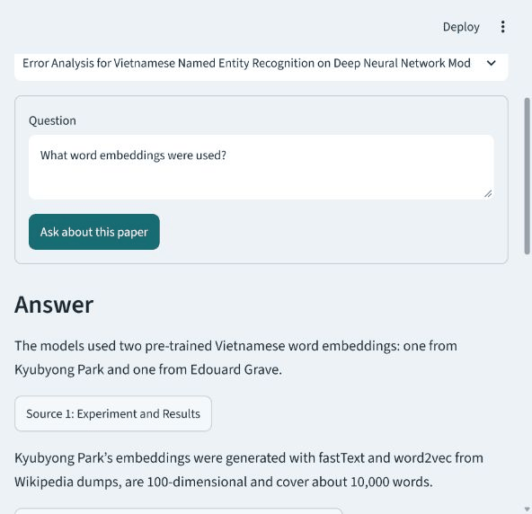
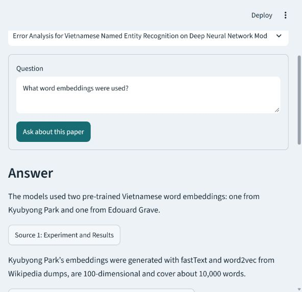
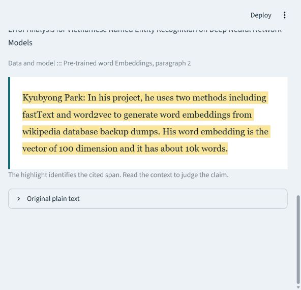
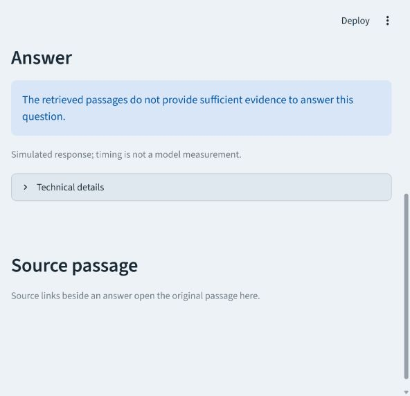
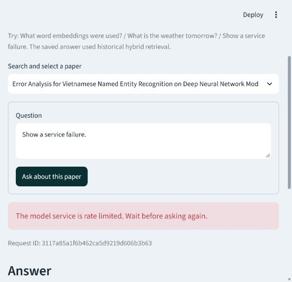

This captured-frame walkthrough replays a saved Groq answer from a QASPER training paper, then shows simulated insufficient-evidence and service-error states. It makes no model calls and is not a new performance measurement.
The historical answer used hybrid retrieval. The selected application uses Groq GPT-OSS-20B with dense retrieval. No human usability claim is made.





Paper text: QASPER v0.3, CC BY 4.0. Source: Error Analysis for Vietnamese Named Entity Recognition on Deep Neural Network Models, arXiv:1911.07228.